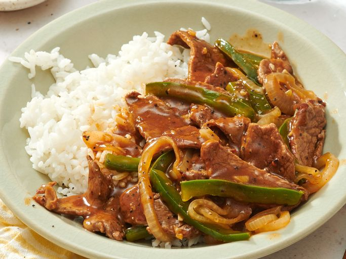

Pepper Steak

Description
Steak strips simmer with garlic, onion, peppers, paprika, and browning sauce for smoky, rich flavor.
Ingredients
- 1 cup uncooked long-grain white rice
- 2 cups water
- 2 tablespoons olive oil
- 1 medium onion, sliced and separated into rings
- ½ green bell pepper, julienned
- 1 pound boneless sirloin steak, cut into thin strips
- 2 cloves garlic, peeled and chopped
- 1 teaspoon browning sauce
- 1 tablespoon ground paprika
- seasoning salt to taste
- ground black pepper to taste
- 1 ½ cups water
- 2 tablespoons cornstarch
- ½ cup water
Directions
- Place rice and 2 cups water in a medium saucepan, and bring to a boil. Cover, reduce heat, and simmer 20 minutes.
- Heat olive oil in a medium saucepan over medium heat, and saute onion and green bell pepper until tender.
- Stir steak, garlic, and browning sauce into the onion and green bell pepper mixture. Season with paprika, seasoning salt, and black pepper. Cook and stir until steak is evenly browned. Mix in 1 1/2 cups water, and bring to a boil.
- In a small bowl, dissolve cornstarch in 1/2 cup water. Stir into the boiling steak mixture until thickened. Serve over the cooked rice.
Back To Recipes